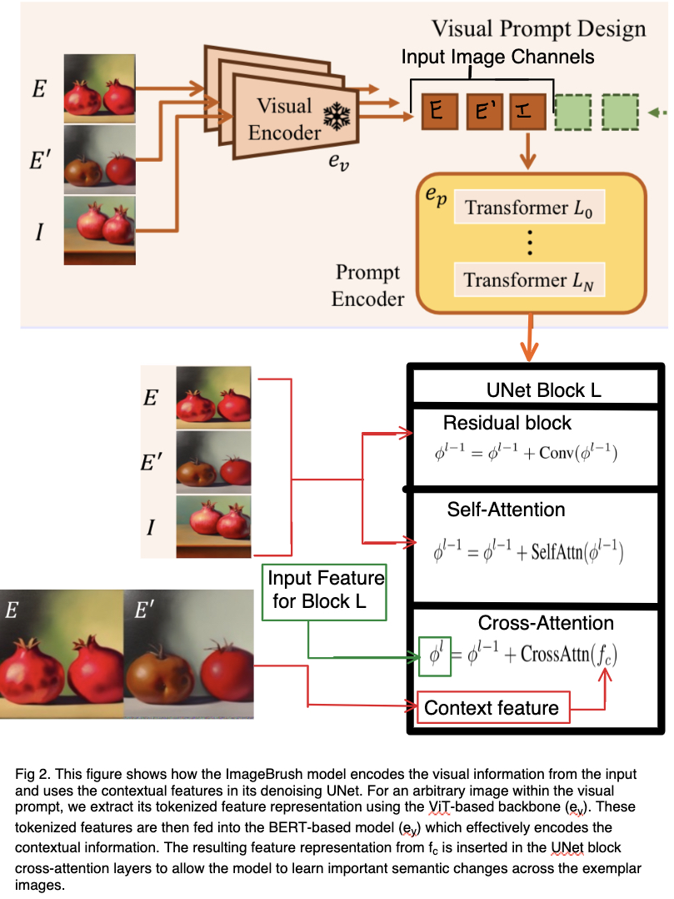

An Analysis of ImageBrush: Learning Visual In-Context Instructions for Exemplar-Based Image Manipulation'
As the title of the paper implies, ImageBrush is a novel diffusion-based image genertation framework. For modern image generation networks it is common to utilize text input to with, like with a CLIP model, to guide the generation of an image. This approach however comes with the inherent issue of a modality gap, where it is difficult to accurately describe exactly what the user wants created. ImageBrush bridges that modality gap by instead utilizing exemplar images as instructions an copying the difference between the two. This allows for seemingly outstanding results in various task like image fill, generation, and transformation.
Background
There have been several advances in image generation tasks over the last couple of years. Models like CLIP enable efficient and expressive embedding for combining image and text modalities. As a result there has been an explosion image generation models that can use text to guide the image generation process. This work tries to use images instead to inform the generation process. The goal is to use other images as exemplar images that the model uses to either generate a new image or fill in an existing one.
To achieve this the authors propose a set of novel techniques:
- They introduced a novel image manipulation protocol that can perform numerous operations using an in-context approach along with a metric to assess the quality of image manipulations.
- They built a diffusion based framework for image generation along with a hybrid context injection strategy to enable language instructions along with image exemplars.
- Extensive experimentation proves that the images can succesfully be created from exemplars
Biography

Yasheng Sun: Student of Computer Science, Tokyo Tech University, Has previously worked on graph neural networks, speech recognition and Image Processing

Yifan Yang: Researcher at the Microsoft Asia Research Center. Computer vision for video and Efficient Networks

Houwen Peng: Senior Researcher at Microsoft Research Asia, works on tiny and efficient deep learning, video object tracking, segmentation and detection, vision transformer, neural architecture search, model compression, vision-language intelligence, saliency detection

Yifei Shen: Researcher at Microsoft Research Asia, works on mean-field asymptotics in machine learning and networking; (2) inductive bias in neural architectures.

Lili Qiu: Assistant Director at Microsoft Research Asia. Works on deep learning for networking

Han Hu: Principal Researcher at Microsoft Research Asia, Worked on the SWIN Transformer, and has made contributions to deformable neural networks

Hideki Koike: Professor at University of Tokyo
Social Impact
Just as with many current image generation techniques this archtiecture is prone to potential abuse and the spreading of misinformation. It could potentially be used to create deepfakes of trusted public figures or spread misinformation by doctoring images. The quality of the transformation could be used to transform a benign image into the aftermath of an unrelated tragedy, so this technology must be monitored carefully. As image generation capability becomes more detailed and powerful in its generality, we must ensure that this technology is not being used for malicious purposes.
Industry Applications
We have identified numerous industry applications for this work
- Such a model can have impact in a diverse set of industries
- potential application is in the Visual Effects for Film and television. Digitally editing frames is an expensive, manual and time consuming process. This process can be used to develop workflows where artists can edit certain frames and have the rest of the frames filled in using this method
- This application can be embedded in applications like Adobe Photoshop as a way to allow users to edit images using image modalities
- This can be a stand alone tool where users can provide both image and text prompts to edit images and video.
Academic Impact
This work has the potential to be investigated further in an academic setting as well. The following be considered:
- A better embedding system to create image embeddings that are fed into the U-Net.
- Investigate novel techniques to inject context into a neural network model.
- Investigate methods to handle cases when the prompt and the image are far apart.
- Improve techniques to handle finer details and small objects.
Summary and Method Breakdown:
The authors build upon previous work with image synthesis through CLIP-guided diffusion models and image translation tasks with
conditional GANs to create a new Exemplar-Based Image Manipulation framework called ImageBrush. To avoid the inherent modality gap that
comes from text-based image generation the authors instead chose to use image-based instruction using a before and after image to specify a
transformation to a query image. For such a task the authors devised a generative model that tackles both pairwise visual instruction understanding
and image synthesis in a unified manner. Necessary to this goal is capturing both the inter-image pair and the intra-image pair relations. Unlike with
language, relationships in image space are not sequential and contain information dispersed across their spatial dimensions, so the authors utilize a
Progressive-in-Painting
strategy. To establish the intra-correlations among exemplar image transformations and their inter-correlation with the query image,
they utilize a grid-like image as input. This grid concatenates a manipulation example and a target query. The top two items in this grid from left to right would
be the exemplar images (E, E’); the bottom left would be the query image (I); and the last grid item would be random noise (M) that is then filled using a diffusion
process to produce the transformed query image (I’). Essentially the authors start with a grid-like image {E, E’, I, M} and attempt to recover the image {E, E’, I, I’}.
Like other Latent Diffusion approaches the authors utilize cross-attention with a Denoising UNet to condition the input, I, on the pair of exemplar images {E, E’}. The authors noted however that capturing detailed information from instruction images through cross-attention alone is challenging, so the authors also utilize self-attention to learn their low-level context using a self-attention mechanism over the grid of inputs. By establishing spatial correspondence within image channels, this design enables the ImageBrush model to attentively process features within each channel and effectively capture their interdependencies.
So essentially the images are encoded, concatenated, passed through multiple transformer layers for the prompt encoder, and then finally passed through the modified UNet to iteratively denoise the image. The authors also utilize a modified conditional predicted noise to accomplish this goal:
This conditioned predicted noise modifies the original predicted noise, epsilon_theta(x_t, null), (noise predicted without attending to the exemplars) to more closely match the guidance signal, epsilon_theta(x_t, c), with guidance scale, w, and provided conditions, c. While the conditions here are generally the exemplar images, the authors also allow for the use of multimodal input such as bounding box user instructions and text descriptions to further improve the diffusion process.
Peer-Review
Strengths and Weaknesses:
Strengths: Great results that seem to outperform SOTA models in exemplar image generation. Concise and relatively easy-to-understand paper The creation of the new prompt and image fidelity evaluation metrics may be important for the evaluation of future models in such a relatively new field. Weaknesses: More developed/in-depth discussion about the unique aspects of the model architecture would be desirable. There is relatively little discussion of the self-attention aspects of the UNet and specific unique improvements over previous work, though the results do seem strong. Evaluation of the model is a little weak. There is some quantitative comparison with Instruct-Pix2Pix, yet a different comparison for TSAM and CoCosNet. The authors also utilize a qualitative comparison with pix2pix and SDEdit, rather than either of the other two models they used before. While it showed seemingly good results this small qualitative comparison could also be very cherry-picked. Created a new evaluation metric but did not use it to compare to any other models
Questions and Limitations:
Addressed some limitations, but a deeper discussion of limitations would be preferred. They briefly touched upon how large differences in the exemplar images lead to issues generating a new image and how the model had trouble with fine details. Would like further testing and comparison with different models and more discussion of how exemplar similarity affects output results. A bit more discussion on how the self-attention was incorporated with the cross-attention would also be nice.
Scores
- Soundness: 3 - Could use more evaluation along with a stronger explanation of theoretical principles in certain parts. A deeper dive into the limitations of the models would be preferred. More discussion of the model architecture and how the addition of self-attention improves the model compared to previous work would be nice.
- Presentation: 4 - Clear and Concise!
- Contribution: 3 - Could be a strong contribution Overall: 7 - Accept: Almost wanted to make this a weak accept because of the evaluation but otherwise an interesting paper. Could use more discussion of specific architectural improvements, but the results seem promising and it could lead to more great research.
Follow-Up Research
Models blending text prompting, image-examplars, and user input are a promising step forward in image generation instructions. The authors noted issues when there significant disparities between the querya nd instruction and difficulties handling intricate details, which would merit some future work to improve. More work in different blends of modalities such as text, user input, and images could lead to great breakgthroughs in image generation and transformation.
References
[1] Yasheng Sun et al.; ImageBrush: Learning Visual In-Context Instructions for Exemplar-Based Image Manipulation; Thirty-seventh Conference on Neural Information Processing Systems (2023).
Team Members
Daniel Varivoda and Tanmay Gadgil